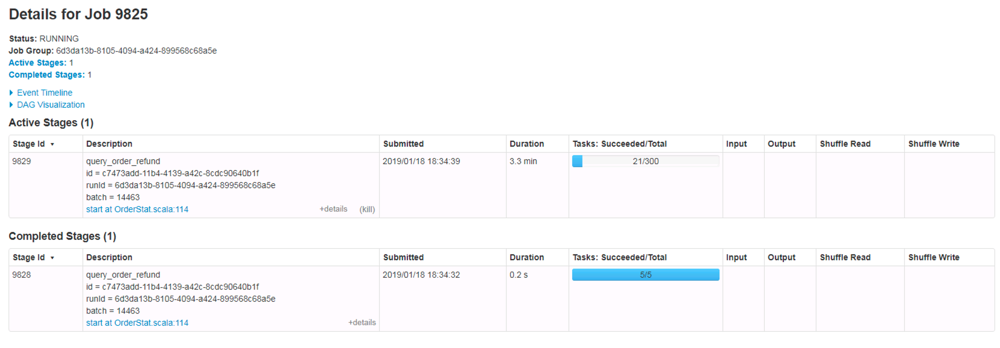

<!DOCTYPE html>
<html>
<head><meta name="generator" content="Hexo 3.8.0">
  <meta charset="utf-8">
  
  <title>Spark Structured Streaming 性能诊断 | datahacker</title>
  <meta name="viewport" content="width=device-width">
  <meta name="description" content="最近组内同事和我反馈，我提交到集群上的一个实时计算 Job 资源占用较高，而该 Job 处理数据量很少，所以怀疑有问题。 打开 Spark 应用监控后台如下图：  目前我们处理实时计算都是基于 Structured Streaming，本质上是一个个 Micro Batch，挑了其中一个 Batch Job 发现被拆分为 2 个 Stages，说明其中发生了一次 Shuffle，然后 Stage1">
<meta name="keywords" content="Spark SQL, Streaming, Performance">
<meta property="og:type" content="article">
<meta property="og:title" content="Spark Structured Streaming 性能诊断">
<meta property="og:url" content="http://datahacker.me/2019/01/22/spark-sql-streaming-performance-profile/index.html">
<meta property="og:site_name" content="datahacker">
<meta property="og:description" content="最近组内同事和我反馈，我提交到集群上的一个实时计算 Job 资源占用较高，而该 Job 处理数据量很少，所以怀疑有问题。 打开 Spark 应用监控后台如下图：  目前我们处理实时计算都是基于 Structured Streaming，本质上是一个个 Micro Batch，挑了其中一个 Batch Job 发现被拆分为 2 个 Stages，说明其中发生了一次 Shuffle，然后 Stage1">
<meta property="og:locale" content="default">
<meta property="og:image" content="http://datahacker.me/2019/01/22/spark-sql-streaming-performance-profile/streaming-job-ui.png">
<meta property="og:updated_time" content="2019-01-22T03:21:27.494Z">
<meta name="twitter:card" content="summary">
<meta name="twitter:title" content="Spark Structured Streaming 性能诊断">
<meta name="twitter:description" content="最近组内同事和我反馈，我提交到集群上的一个实时计算 Job 资源占用较高，而该 Job 处理数据量很少，所以怀疑有问题。 打开 Spark 应用监控后台如下图：  目前我们处理实时计算都是基于 Structured Streaming，本质上是一个个 Micro Batch，挑了其中一个 Batch Job 发现被拆分为 2 个 Stages，说明其中发生了一次 Shuffle，然后 Stage1">
<meta name="twitter:image" content="http://datahacker.me/2019/01/22/spark-sql-streaming-performance-profile/streaming-job-ui.png">
  
    <link rel="alternative" href="/atom.xml" title="datahacker" type="application/atom+xml">
  
  
    <link rel="icon" href="/favicon.ico">
  
  <link rel="stylesheet" href="/css/style.css">
  <!--[if lt IE 9]><script src="//html5shiv.googlecode.com/svn/trunk/html5.js"></script><![endif]-->
  
</head></html>
<body>
  <div id="container">
    <div class="mobile-nav-panel">
	<i class="icon-reorder icon-large"></i>
</div>
<header id="header">
	<h1 class="blog-title">
		<a href="/">datahacker</a>
	</h1>
	<nav class="nav">
		<ul>
			<li><a href="/">Home</a></li><li><a href="/archives">Archives</a></li>
			<li><a id="nav-search-btn" class="nav-icon" title="Search"></a></li>
			<li><a href="/atom.xml" id="nav-rss-link" class="nav-icon" title="RSS Feed"></a></li>
		</ul>
	</nav>
	<div id="search-form-wrap">
		<form action="//google.com/search" method="get" accept-charset="UTF-8" class="search-form"><input type="search" name="q" class="search-form-input" placeholder="Search"><button type="submit" class="search-form-submit">&#xF002;</button><input type="hidden" name="sitesearch" value="http://datahacker.me"></form>
	</div>
</header>
    <div id="main">
      <article id="post-spark-sql-streaming-performance-profile" class="post">
	<footer class="entry-meta-header">
		<span class="meta-elements date">
			<a href="/2019/01/22/spark-sql-streaming-performance-profile/" class="article-date">
  <time datetime="2019-01-22T02:18:10.000Z" itemprop="datePublished">2019-01-22</time>
</a>
		</span>
		<span class="meta-elements author">huanzh</span>
		<div class="commentscount">
			
		</div>
	</footer>
	
	<header class="entry-header">
		
  
    <h1 class="article-title entry-title" itemprop="name">
      Spark Structured Streaming 性能诊断
    </h1>
  

	</header>
	<div class="entry-content">
		
    	<p>最近组内同事和我反馈，我提交到集群上的一个实时计算 Job 资源占用较高，而该 Job 处理数据量很少，所以怀疑有问题。</p>
<p>打开 Spark 应用监控后台如下图：</p>
<p></p>
<p>目前我们处理实时计算都是基于 Structured Streaming，本质上是一个个 <code>Micro Batch</code>，挑了其中一个 <code>Batch Job</code> 发现被拆分为 2 个 Stages，说明其中发生了一次 <code>Shuffle</code>，然后 Stage1 的 Tasks 数为 5，刚好和 Source 的 Kafka topic 分区数一致，Stage2 的 Tasks 数居然是 300， 问题找到了：</p>
<p>== Shuffle Partitions 过大，相应的分配给 Stage2 的 Task 数过多，导致资源使用率较高  ==</p>

    
	</div>
	<footer class="entry-footer">
		<div class="entry-meta-footer">
			<span class="category">
				
			</span>
			<span class="tags">
				
  <ul class="article-tag-list"><li class="article-tag-list-item"><a class="article-tag-list-link" href="/tags/Spark-SQL-Streaming-Performance/">Spark SQL, Streaming, Performance</a></li></ul>

			</span>
		</div>
	</footer>
	
    
<nav id="article-nav">
  
  
    <a href="/2018/10/22/spark-sql-streaming-monitor-alert/" id="article-nav-older" class="article-nav-link-wrap">
      <strong class="article-nav-caption">Older</strong>
      <div class="article-nav-title">
        
          Spark Structured Streaming 实现监控告警
        
      </div>
    </a>
  
</nav>

  
</article>


    </div>
    <div class="mb-search">
  <form action="//google.com/search" method="get" accept-charset="utf-8">
    <input type="search" name="q" results="0" placeholder="Search">
    <input type="hidden" name="q" value="site:datahacker.me">
  </form>
</div>
<footer id="footer">
	<h1 class="footer-blog-title">
		<a href="/">datahacker</a>
	</h1>
	<span class="copyright">
		&copy; 2019 huanzh<br>
		Powered by <a href="http://hexo.io/" target="_blank">Hexo</a>
	</span>
</footer>
    

<script src="//ajax.googleapis.com/ajax/libs/jquery/2.0.3/jquery.min.js"></script>


<link rel="stylesheet" href="/fancybox/jquery.fancybox.css" media="screen" type="text/css">
<script src="/fancybox/jquery.fancybox.pack.js"></script>


<script src="/js/script.js"></script>
  </div>
</body>
</html>